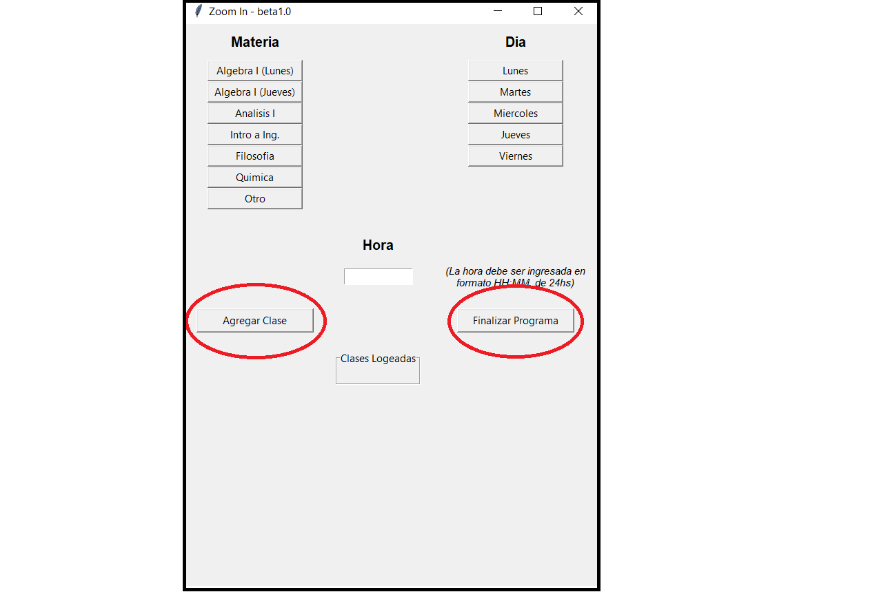

Project Description
Zoom In es una aplicación que busca automatizar la entrada a clases virtuales via Zoom. Con sólo usar la aplicación una vez en la semana,
es posible entrar a todas las reuniones/clases programadas sin hacer ni un solo click.
Instrucciones
Configuración de Zoom
- Se debe estar logeado dentro de la app, de manera que entre directamente al menú de la aplicación y esté lista para usar
- Video: Activar 'Apagar Video' al ingresar a una reunión
- Audio: Activar 'Mutear mi Audio' al ingresar a una reunión
Instrucciones de Uso
-
En la sección 'Materias' se puede elegir la materia a la que se desea ingresar. La versión actual se construyó a partir del plan de estudio de Ing. Informática,
por lo que son los de esta carrera quienes verán mayor beneficio.
En caso de querer entrar a otra Materia, se puede ingresar manualmente el ID de la reunión de Zoom
y dejarlo setteado para entrar. En futuras versiones se buscará hacer la aplicación más cómoda para usuarios de otras carreras.
-
En la sección 'Día' se puede seleccionar rápidamente qué día de la semana será la reunión que se quiere programar.
-
En la sección 'Hora' se debe ingresar la hora en la que se quiere ingresar a la reunión. Lo ideal es ingresar una hora de entre 5 a 2 minutos antes del comienzo de la
reunión. La hora debe estar en formato de 24hs y HH:MM, es decir '09:15' o '22:55'.
-
Debajo de la sección 'Hora' se encuentran dos botones: 'Agregar Clase' y
'Finalizar Programa'.
'Agregar Clase' se debe oprimir una vez que el usuario ha ingresado los tres campos previos, 'Materia', 'Dia' y 'Hora'.
Hecho esto, el usuario, al oprimir este botón creará un evento que se activará una vez llegue al tiempo establecido. El usuario podrá agregar todos los eventos que quiera, siempre que después
de llenar los campos oprima 'Agregar Clase'.

Una vez que se hayan introducido todos los eventos deseados, el usuario deberá oprimir 'Finalizar Programa'. Al hacerlo, el programa se cerrará y quedará en segundo
plano a la espera del momento de iniciarse. En caso de que se quiera interrumpir el programa prematuramente, se podrá hacer desde el administrador de tareas.
-
En la región inferior de la ventana hay un display de las 'Clases Logueadas'. En él se irá mostrando la información de los eventos ingresados por el usuario en un listado.